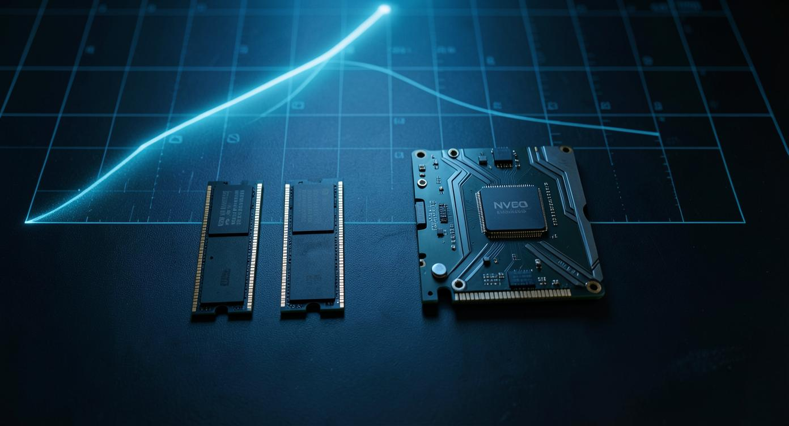
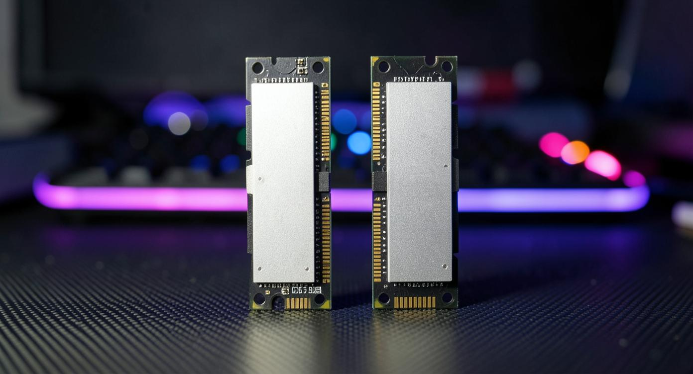
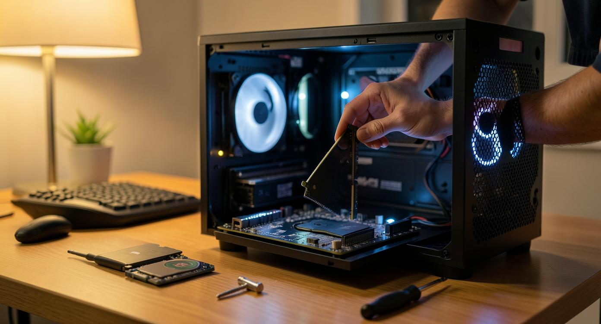

RAM, SSD aur GPU Memory Shortage 2027: Purane PC ko Sahi Kram Me Upgrade Karne ki Guide

अगर आप 2027 में PC अपग्रेड करने की सोच रहे हैं, तो एक ज़रूरी बात पहले जान लीजिए — सिर्फ ग्राफिक्स कार्ड महंगा नहीं हो रहा, बल्कि RAM, SSD और GPU की मेमोरी तीनों पर दबाव है। नवंबर 2026 की रिपोर्ट्स में यह साफ कहा गया है कि AI सर्वर और डेटा सेंटर की मांग की वजह से मेमोरी की कमी अगले साल तक खिंच सकती है।
इसका मतलब यह नहीं कि आपको घबराकर सब कुछ आज खरीद लेना चाहिए। मतलब यह है कि अपग्रेड की योजना थोड़ी समझदारी से बनानी चाहिए। इस आर्टिकल में मैं एक ऐसे सिस्टम को उदाहरण बनाकर चलूँगा जो बहुत लोगों के घर में है — Core i7-8700, 8GB RAM, GT 710 ग्राफिक्स और 650W PSU। बताऊँगा कि किस क्रम में अपग्रेड करें, कहाँ पैसा लगाएँ और कहाँ नहीं।
छोटा जवाब: AI डेटा सेंटर्स की मेमोरी मांग से DDR5, DDR4, NAND (SSD) और GDDR6/GDDR7 की कीमतें बढ़ रही हैं, और यह दबाव 2027 तक चल सकता है। अपग्रेड करना है तो पहले RAM और SSD लें, फिर ग्राफिक्स कार्ड, और PSU की क्वालिटी ज़रूर जाँचें। i7-8700 वाले सिस्टम में DDR4 ही चलेगी — DDR5 मत खरीदिए। GT 710 को हटाकर मिड-रेंज कार्ड लगाना सबसे बड़ा फर्क डालेगा, लेकिन 8GB RAM और पुरानी हार्ड डिस्क पहले ठीक करें।
मेमोरी की कमी कहाँ-कहाँ है?
Tom's Hardware ने 17 नवंबर 2026 को DDR4 और DDR5 के दाम का ट्रैकर अपडेट किया और PC Gamer ने भी रिपोर्ट किया कि मेमोरी की कमी ग्राफिक्स कार्ड की कीमतें ऊपर धकेल रही है। असर चार जगह दिख रहा है:
| कंपोनेंट | क्यों प्रभावित | आप पर असर |
|---|---|---|
| DDR5 RAM | सर्वर और AI मशीनों की भारी मांग | नया PC महंगा |
| DDR4 RAM | पुरानी लाइनें घट रही हैं, सप्लाई सीमित | पुराने PC का अपग्रेड महंगा |
| NVMe SSD (NAND) | फ्लैश की सप्लाई तंग | स्टोरेज अपग्रेड महंगा |
| GDDR6/GDDR7 | GPU मेमोरी की लागत बढ़ी | ग्राफिक्स कार्ड महंगा |
इसका सबसे बड़ा मतलब यह है कि "सब कुछ एक साथ" अपग्रेड करने का प्लान अब पहले से ज़्यादा महंगा पड़ेगा। इसलिए चरणों में अपग्रेड करना समझदारी है।

i7-8700 वाले सिस्टम की असली स्थिति
Core i7-8700 आज भी एक सभ्य प्रोसेसर है। 6 कोर, 12 थ्रेड्स, और सामान्य गेमिंग-वर्क के लिए काफी ताकत। समस्या प्रोसेसर नहीं, बल्कि उसके साथ बैठे बाकी पार्ट्स हैं। 8GB RAM आज के विंडोज और ब्राउज़र के लिए कम है। GT 710 तो बस डिस्प्ले चलाने के लिए बना कार्ड है, गेमिंग के लिए नहीं। और अगर अभी भी हार्ड डिस्क (HDD) पर सिस्टम चल रहा है, तो विंडोज खुलने में ही मिनट लगते होंगे।
ध्यान देने वाली तकनीकी बात — i7-8700 8वीं पीढ़ी है, इसलिए यह DDR4 मेमोरी वाले मदरबोर्ड पर चलता है। इसमें DDR5 नहीं लग सकती। बहुत से लोग सेल में DDR5 सस्ती देखकर खरीद लेते हैं और बाद में पता चलता है कि वह मदरबोर्ड में फिट ही नहीं होती। इसलिए पहले अपना मदरबोर्ड मॉडल देखें और DDR4 2666/3200 की ही प्लानिंग करें।
अपग्रेड का सही क्रम
स्टेप 1: RAM 16GB या 32GB करें
यह सबसे सस्ता और सबसे तुरंत दिखने वाला अपग्रेड है। 8GB से 16GB करने पर ब्राउज़र के टैब, विंडोज अपडेट और गेम लोडिंग सब बेहतर महसूस होंगे। अगर आप वीडियो एडिटिंग या बड़े डॉक्यूमेंट पर काम करते हैं, तो 32GB तक जाएँ। ध्यान रखें — मदरबोर्ड के स्लॉट और सपोर्टेड स्पीड पहले चेक करें। अगर दो स्लॉट हैं और दोनों भरे हैं, तो पुरानी स्टिक हटाकर नई लगानी पड़ेगी।
स्टेप 2: SSD लगाएँ
अगर सिस्टम अभी HDD पर है, तो 500GB या 1TB का NVMe SSD लगवाएँ। फर्क इतना बड़ा होगा कि आपको लगेगा कि नया कंप्यूटर मिल गया। विंडोज बूट, ऐप खुलना और फाइल कॉपी — तीनों तेज़ हो जाते हैं। मदरबोर्ड में NVMe स्लॉट न हो तो SATA SSD भी ठीक है, HDD से कई गुना बेहतर।

स्टेप 3: ग्राफिक्स कार्ड
GT 710 की जगह मिड-रेंज कार्ड लगाना गेमिंग में सबसे बड़ा बदलाव लाएगा। लेकिन यहाँ एक जाल है — i7-8700 पुराना है, इसलिए बहुत महंगा कार्ड लगाने पर प्रोसेसर पीछे छूट जाएगा (जिसे bottleneck कहते हैं)। ₹25,000-₹40,000 के दायरे का कार्ड इस सिस्टम के साथ संतुलित रहेगा।
साथ में PSU की जाँच करें। 650W लिखा होना काफी नहीं — ब्रांड, 80+ रेटिंग और PCIe कनेक्टर देखें। सस्ता "local" PSU नया कार्ड लगाते ही परेशानी दे सकता है। अगर PSU 5-6 साल पुराना है, तो उसे भी बदलने की योजना बनाएँ।
स्टेप 4: बाद में प्लेटफॉर्म
अगर आपको लगता है कि i7-8700 अब भी काम चला रहा है, तो पूरा सिस्टम बदलने की जल्दी न करें। 2027 में मेमोरी महंगी है, इसलिए नया प्लेटफॉर्म (नया CPU + मदरबोर्ड + DDR5) अभी महंगा पड़ेगा। जब मेमोरी की कीमतें नरम पड़ें, तब प्लेटफॉर्म बदलें।
क्या नहीं करना चाहिए
- DDR5 मत खरीदिए: i7-8700 वाले मदरबोर्ड में DDR5 नहीं चलेगी।
- बहुत महंगा GPU मत लगाइए: CPU पीछे छूट जाएगा और पैसा बर्बाद होगा।
- सस्ता PSU मत लीजिए: नया कार्ड जलने का खतरा रहता है।
- एक साथ सब कुछ मत खरीदिए: कीमतें ऊँची हैं, चरणों में खरीदें।
- बिना बिल मत खरीदिए: वारंटी और रीसेल दोनों में दिक्कत आएगी।
2027 में कीमतें कैसी रहेंगी?
ईमानदार जवाब — कोई पक्का नहीं जानता। रिपोर्ट्स कहती हैं कि मेमोरी की कमी 2027 तक चल सकती है, क्योंकि नई फैक्ट्रियाँ बनने में समय लगता है और AI की मांग अभी कम नहीं हो रही। अगर ऐसा हुआ, तो RAM और SSD सस्ते नहीं होंगे।
दूसरी तरफ, अगर AI कंपनियों ने खरीद थोड़ी धीमी की, तो सप्लाई बाजार में आ सकती है और कीमतें नरम पड़ सकती हैं। इसलिए "2027 में सब सस्ता हो जाएगा" मानकर मत बैठिए, और "सब खत्म हो जाएगा" सोचकर पैनिक बाइंग भी मत कीजिए।
मेरा नज़रिया
मैंने अपने कई दोस्तों को देखा है जो नया GPU खरीदने से पहले 16GB RAM नहीं लगाते। नतीजा — नया कार्ड लगाने के बाद भी गेम स्टटर करता है, क्योंकि सिस्टम मेमोरी कम पड़ रही है। इसलिए मेरी राय में अपग्रेड का क्रम यही है: पहले RAM, फिर SSD, फिर GPU, और सबसे आखिर में प्लेटफॉर्म।
दूसरी बात, "अभी नहीं तो कभी नहीं" वाली सोच से बचें। PC के पार्ट्स ऐसी चीज़ नहीं हैं जो खत्म हो जाएँ। कीमतें बदलती रहती हैं और नए मॉडल आते रहते हैं। जो लोग अपनी ज़रूरत समझकर एक-एक कदम उठाते हैं, उनका सिस्टम लंबे समय तक अच्छा चलता है।
DDR4 RAM खरीदते समय 5 सावधानियाँ
पुराने सिस्टम में RAM अपग्रेड करना सीधा काम लगता है, लेकिन थोड़ी गलती से पैसा बर्बाद हो सकता है। खरीदने से पहले ये पाँच बातें जाँचें।
- मेमोरी टाइप: i7-8700 के लिए DDR4 ही, DDR5 नहीं। मदरबोर्ड का मॉडल देखकर पक्का करें।
- स्पीड: 2666MHz आम तौर पर सपोर्टेड है। 3200MHz लगाने पर वह धीमी स्पीड पर चलेगी — कोई नुकसान नहीं, पर ज़्यादा पैसा भी मत दीजिए।
- सिंगल या डुअल चैनल: दो स्टिक्स लगाने से परफॉर्मेंस बेहतर होती है। 16GB के लिए 8+8 बेहतर है, 16+0 से।
- स्लॉट: मदरबोर्ड में कितने स्लॉट हैं और कितने खाली हैं, पहले देखें।
- बिल और वारंटी: RAM की वारंटी लंबी होती है, पर बिल के बिना क्लेम मुश्किल है।
एक और बात, मिक्स मेमोरी (अलग ब्रांड या अलग स्पीड की स्टिक्स) अक्सर चल जाती है, पर कभी-कभी सिस्टम बूट नहीं होता। कोशिश करें कि एक ही जोड़ी खरीदें।
अगर आपको पता नहीं कि मदरबोर्ड कौन सी स्पीड सपोर्ट करता है, तो Windows में Task Manager → Performance → Memory खोलकर देखें। वहाँ मौजूदा स्पीड और स्लॉट की जानकारी मिल जाती है। इसी जानकारी के आधार पर स्टिक खरीदें, ताकि पैसा और समय दोनों बचें।
अपग्रेड से पहले बैकअप ज़रूर लें
RAM या SSD बदलने से डेटा नहीं जाता, लेकिन अगर आप विंडोज नई ड्राइव पर इंस्टॉल कर रहे हैं तो पुरानी फाइलें सुरक्षित रखनी पड़ती हैं। अपग्रेड से पहले तीन चीज़ें करें।
- ज़रूरी फाइलें: डॉक्यूमेंट, फोटो और प्रोजेक्ट किसी बाहरी ड्राइव या क्लाउड पर कॉपी करें।
- ब्राउज़र और पासवर्ड: अकाउंट सिंक चालू है या नहीं, जाँचें।
- विंडोज लाइसेंस: डिजिटल लाइसेंस माइक्रोसॉफ्ट अकाउंट से जुड़ा हो, तो नई इंस्टॉल में दिक्कत नहीं आएगी।
अपग्रेड के बाद क्या टेस्ट करें?
- RAM की पहचान: Task Manager या BIOS में देखें कि पूरी कैपेसिटी और सही स्पीड दिख रही है।
- स्टेबिलिटी: कुछ घंटे सामान्य काम करें। अचानक रीस्टार्ट हो तो RAM ठीक से नहीं बैठी हो सकती।
- SSD स्पीड: क्रिस्टलडिस्कमार्क जैसे टूल से पढ़ने-लिखने की स्पीड देखें।
- तापमान: अपग्रेड के बाद केस बंद करके 20-30 मिनट लोड चलाएँ और तापमान देखें।
- गेम टेस्ट: पुराने और नए दोनों तरह के गेम चलाकर स्टटर और फ्रेम चेक करें।
अगर सिस्टम बूट न हो, तो RAM स्टिक निकालकर दोबारा लगाएँ और स्लॉट बदलकर देखें। ज़्यादातर मामलों में यही हल निकलता है।
बजट कैसे बाँटें?
अगर कुल बजट ₹40,000 है, तो उसे इस तरह बाँटा जा सकता है। यह सिर्फ उदाहरण है, आपकी ज़रूरत के हिसाब से बदल सकता है।
| अपग्रेड | अनुमानित हिस्सा | फायदा |
|---|---|---|
| RAM (16GB DDR4) | ₹4,000-₹6,000 | मल्टीटास्किंग, स्टटर कम |
| NVMe SSD 1TB | ₹6,000-₹9,000 | बूट और लोडिंग तेज़ |
| ग्राफिक्स कार्ड | ₹22,000-₹30,000 | गेमिंग में सबसे बड़ा फर्क |
| PSU (अगर पुराना है) | ₹4,000-₹6,000 | सुरक्षा और स्थिरता |
ध्यान दें, अगर बजट कम है तो पहले RAM और SSD पर खर्च करें। इनसे रोज़ के काम में तुरंत फर्क दिखता है और बाद में GPU लेने पर भी सिस्टम पीछे नहीं छूटेगा।
बिजली, कूलिंग और धूल
अपग्रेड के साथ एक और चीज़ का ध्यान रखें — कूलिंग। पुराने केस में धूल भरी होती है और नया कार्ड ज़्यादा गर्मी पैदा करता है। अगर तापमान बढ़ा रहे, तो फैन साफ करें और केस में एक इनटेक तथा एक एग्ज़ॉस्ट फैन ज़रूर लगाएँ।
बिजली की गुणवत्ता भी मायने रखती है। बार-बार वोल्टेज गिरने वाले इलाके में UPS लगाएँ। महंगे पार्ट्स को सस्ते PSU और अस्थिर बिजली से बचाना ज़रूरी है।
कब पूरा सिस्टम बदलें?
i7-8700 के साथ 16GB RAM और अच्छा SSD लगाने के बाद भी अगर आपको लगता है कि काम अटक रहा है, तो प्लेटफॉर्म बदलने का समय आ गया है। संकेत साफ होते हैं — नए गेम्स में CPU 100% पर चलता रहे और GPU 60-70% पर ही रहे, वीडियो एक्सपोर्ट में घंटों लगें, या नई विंडोज अपडेट के बाद सिस्टम भारी लगे।
लेकिन जल्दबाजी मत कीजिए। 2027 में मेमोरी महंगी है, इसलिए नया प्लेटफॉर्म (CPU + मदरबोर्ड + DDR5) अभी पुराने सिस्टम को RAM और SSD से ताज़ा करने से कहीं ज़्यादा महंगा पड़ेगा।
क्या लैपटॉप भी इसी तरह अपग्रेड हो सकता है?
कुछ लैपटॉप में RAM और SSD बदले जा सकते हैं, कुछ में नहीं। पुराने लैपटॉप में अक्सर RAM का एक स्लॉट खाली मिलता है, जिसमें 8GB की स्टिक लगाकर 16GB किया जा सकता है। लेकिन नए पतले लैपटॉप में RAM मदरबोर्ड पर सोल्डर होती है, इसलिए बदलना मुश्किल है। अपना मॉडल नंबर देखकर पहले पता करें कि क्या अपग्रेड संभव है, वरना स्टिक खरीदने का कोई मतलब नहीं।
अक्सर पूछे जाने वाले सवाल
i7-8700 में DDR5 लग सकती है?
नहीं। 8वीं पीढ़ी के प्रोसेसर DDR4 मदरबोर्ड पर चलते हैं। DDR5 के लिए नया मदरबोर्ड और नया CPU चाहिए।
8GB से 16GB RAM का फर्क दिखेगा?
हाँ, खासकर ब्राउज़िंग, मल्टीटास्किंग और गेम लोडिंग में। यह सबसे सस्ता और सबसे ज़रूरी अपग्रेड है।
650W PSU काफी है?
मिड-रेंज कार्ड के लिए आम तौर पर हाँ, बशर्ते PSU अच्छे ब्रांड का और 80+ रेटेड हो। हाई-एंड कार्ड के लिए 750W या ज़्यादा बेहतर है।
क्या SSD से गेम तेज़ चलेंगे?
लोडिंग टाइम काफी कम होगा। फ्रेम रेट नहीं बढ़ेगा, क्योंकि वह GPU और CPU पर निर्भर करता है।
क्या 2027 तक इंतज़ार करना चाहिए?
अगर सिस्टम चल रहा है, तो RAM और SSD अभी लगा सकते हैं। GPU और प्लेटफॉर्म के लिए कीमतें देखकर फैसला करें।
निष्कर्ष
मेमोरी की कमी एक असली दिक्कत है, पर इसका मतलब यह नहीं कि आप अपग्रेड न करें। सही क्रम अपनाएँ — पहले RAM, फिर SSD, फिर GPU। i7-8700 वाले सिस्टम में DDR4 ही लगेगी और बहुत महंगा कार्ड लगाने से बचें। अपनी ज़रूरत, बजट और मौजूदा पार्ट्स देखकर एक-एक कदम उठाएँ। इस तरह आप कम खर्च में बड़ा फर्क पाएँगे और 2027 की महंगाई का दबाव भी झेल लेंगे।
स्रोत: Tom's Hardware RAM Price Index, 17 नवंबर 2026 · PC Gamer, नवंबर 2026
अपग्रेड से पहले अपने मदरबोर्ड का मॉडल, RAM स्लॉट और PSU के कनेक्टर ज़रूर जाँचें। कीमतें बाजार के हिसाब से बदलती रहती हैं।